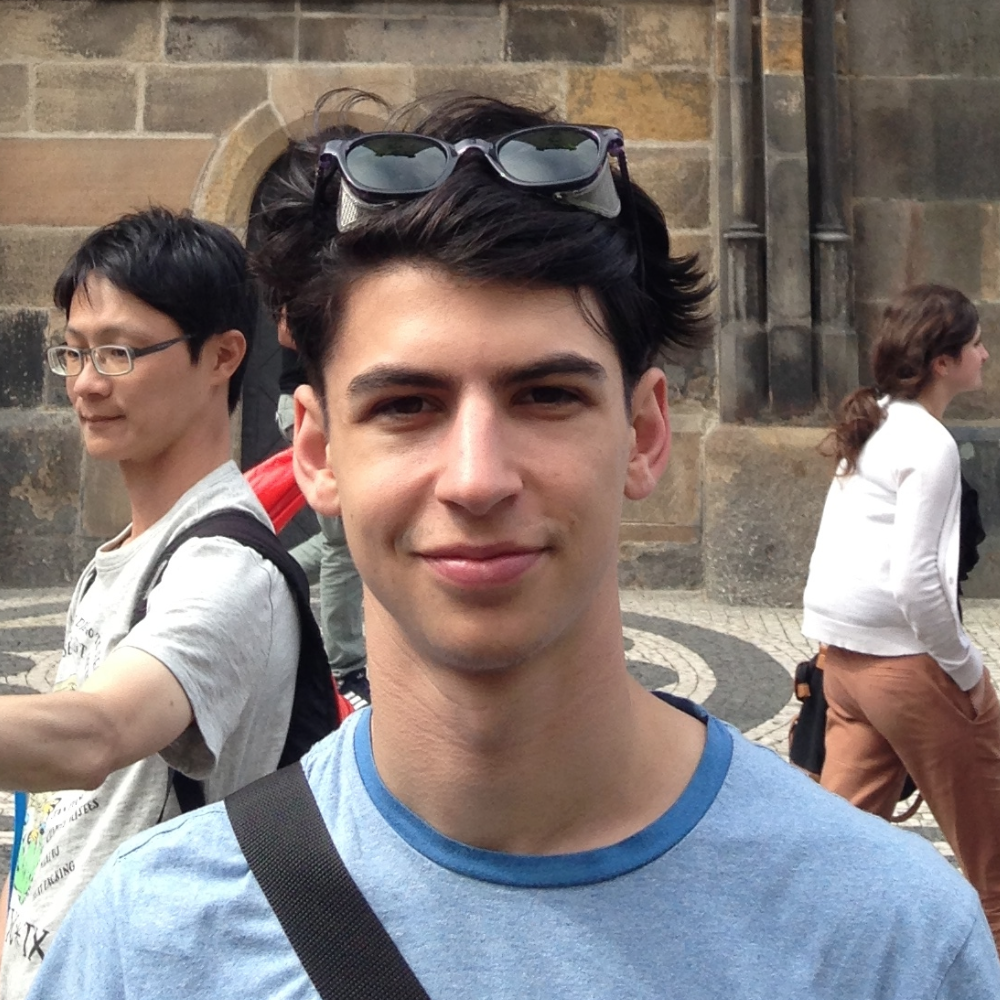

Jonah Arlo Schwartz
Swarthmore College '15
Computer Science Major, German Studies Minor

Cyclist, Traveler, German Speaker
- About Me:
- Projects:
- Hobbies:
- Spoken Languages:
- English (native)
- German (fluent)
- Spanish (proficient)
- Dutch (beginner)
- Current data:
- Location: Oakland, CA
- Last destination(s): Los Angeles, CA
- Next destination(s): Portland, OR
- Reading: Always Coming Home by Ursula K. Le Guin, Die Nacht by Elie Wiesel, IV: A Decade of Curious People and Dangerous Ideas by Chuck Klosterman
- Watching: Rick and Morty